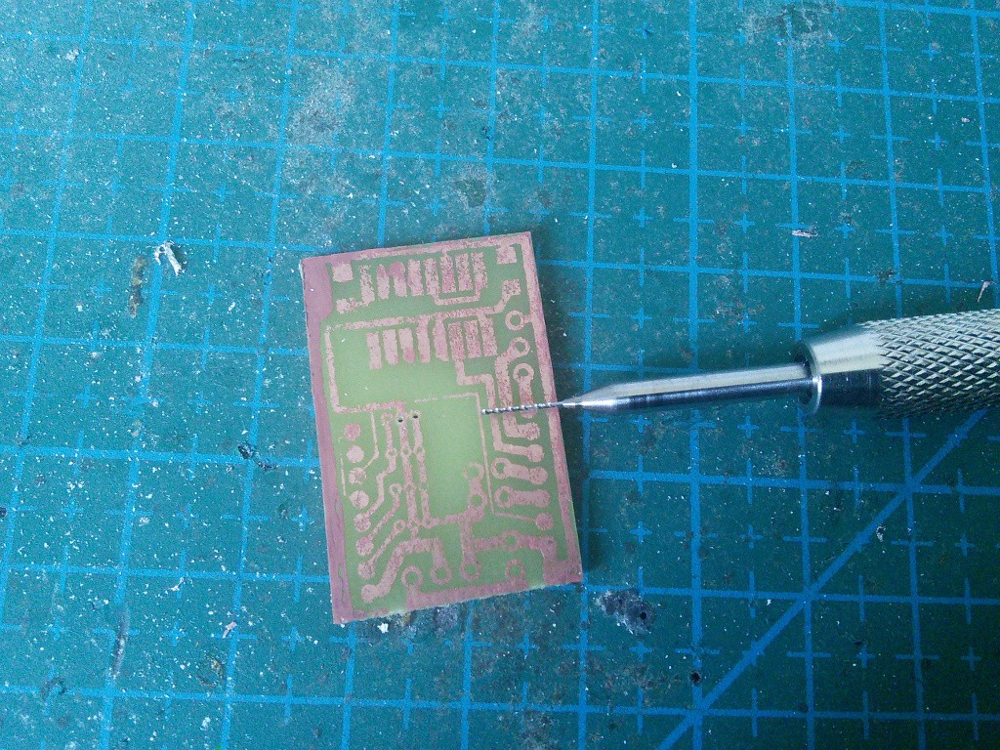
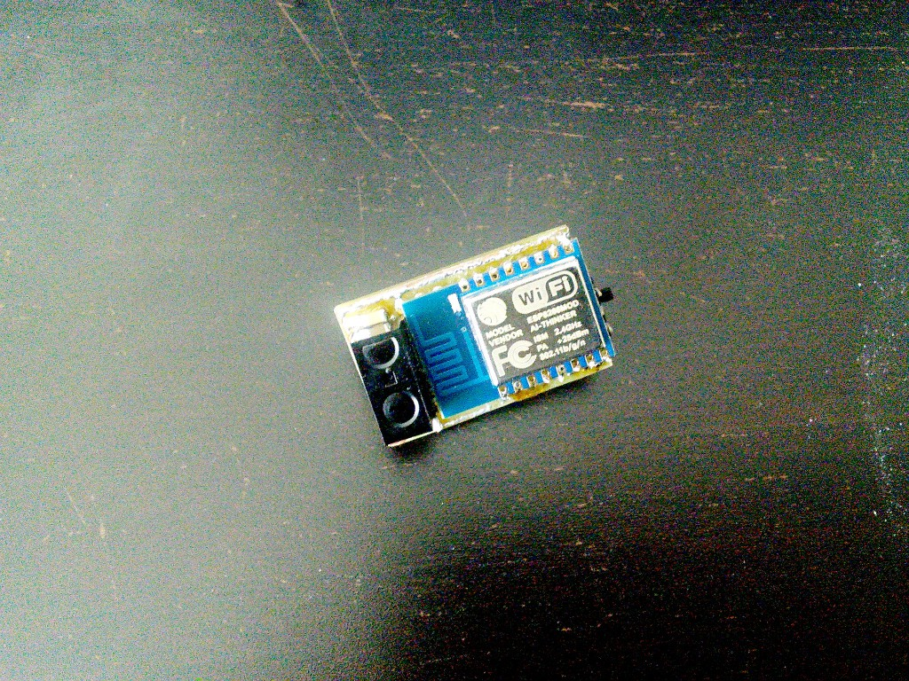
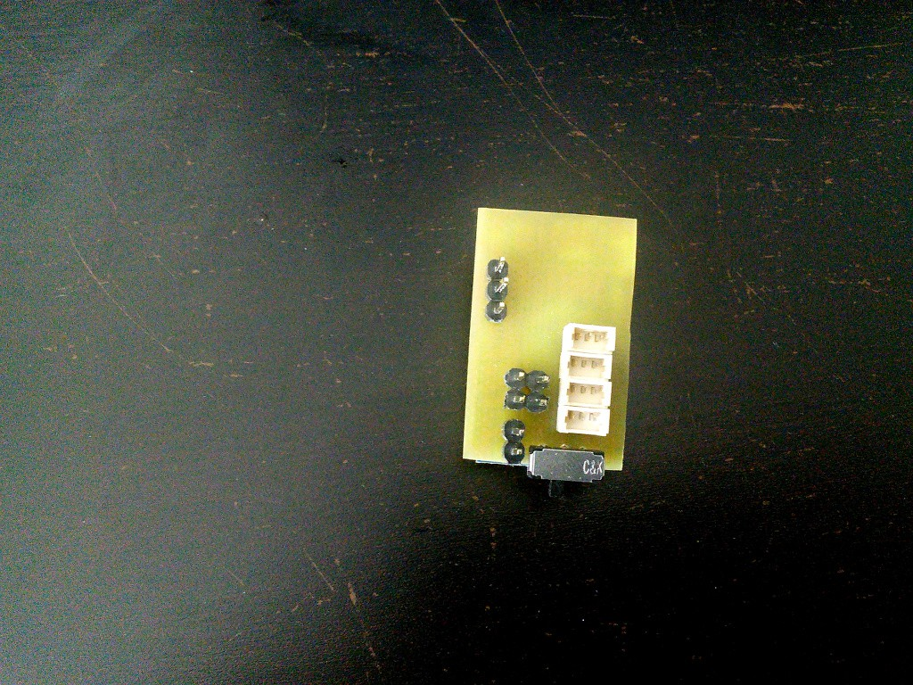
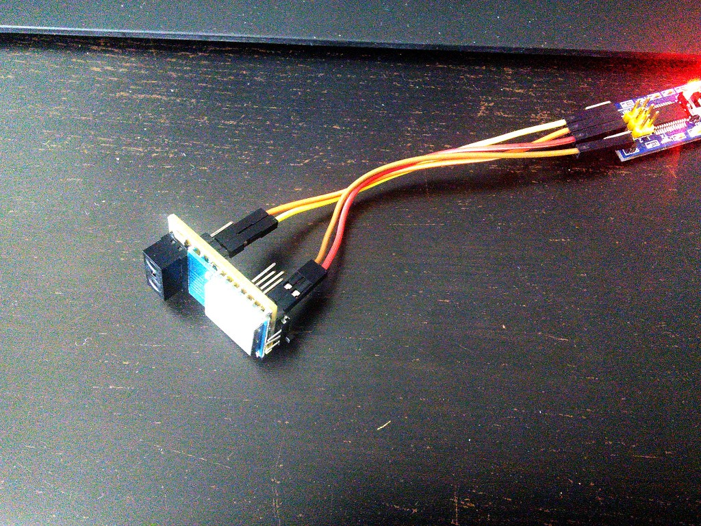

Second Chance¶
Published on 2015-06-04 in µBob biped robot.
As I mentioned previously, I’m remaking µBob’s brains. It’s still going to be an ESP8266, but this time it’s the ESP-12 module, and it’s properly mounted on a printed circuit board that I have etched myself! Also, a distance sensor. But first, the board:
As you can see, the quality is abysmal. After several failed attempts at transferring the toner from the printed page to the board properly, I finally decided to call it “good enough”, fix the most glaring problems with acrylic paint and etch the thing. Surprisingly, the drilling went well and I only broke one drill bit. Then I covered all the traces with solder, and fixed the broken traces with small pieces of wire. Soldered all the parts, and here it is:
You can see the module, the distance sensor, and one of the two SMD capacitors I had to add for it. On the other side:
You see the four servo sockets, the power switch, and a bunch of headers for power and debugging. Then I went over the board with an ohm-meter. And I’m glad I did! after removing a couple of short circuits that would have fried my programmer, I decided I’m ready to risk, and actually connected the thing to my computer:
Seems like at least some connections work, because I was able to flash Micropython to it, and get a REPL prompt on the serial console. I’m afraid to check if the servo connections and the distance sensor work…
Also, I will have to upload NodeMCU firmware to it for now, as the Micropython one doesn’t support PWM yet, and I’m not sure I’m up to bit-banging it by brute force.